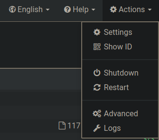

SyncThing for Obsidian
Backing up Obsidian#
There are many ways to backup and sync Obsidian Vault. But there are downsides to each one. Plus if I’m using Obsidian instead of Notion I like to keep it a little more private than using their own sync. And also I would like to not pay for it.
Using remotely save plugin#
This was my way to go for a while. It provided encryption and would sync on my own cloud accounts. However I liked it to be more instant than tapping a button waiting for it to sync then continue using it on my other device. I always enjoyed google keep level of syncing. However If you’re just getting started this is a good option until you start typing a lot and switch between a lot of devices.
Get started with SyncThing#
On my main device I’m using arch(btw). So I installed syncthing from AUR. yay -S syncthing-bin. However SyncThing is available on almost every device. Here you can find download links for almost every device.
After installing it will by default run on your localhost:8384.
Setting it up#
Go to localhost:8384 on your browser. On the left side you’ll see the folders that are syncing. On the right bottom, the devices that you want to sync between. From the left side you can go ahead and remove the default folder.
Setting up local devices#
I’m syncing a desktop with my android phone however the process is basically the same on all devices.
Add your Android device#
I’m using this client. However the process is the same on other clients as well. On your browser click on add a remote device. On your android device click show device ID.
Add it as your Device ID in the browser. Give it a name. and since it’s my phone on the sharing tab I check auto accept. Save it.
Add your desktop#
Now we want to make sure the sync also happens in reverse so we must do the opposite way as well. On your android phone tap on the add a device icon on the top right of the screen. In your browser from actions click on show ID.
Either scan it or add it manually on the first box. Again since this is my desktop I also check auto accept. And save it.
Setting up folders#
In your browser click on add folder. Give the folder path to your vault. Give it a label. In the sharing tab you should see your other remote device. Choose it and add the folder. Syncing should auto start between these devices.
If the syncing didn’t start automatically on your android in the status tab, tap on “Force Start Ignore Run Conditions”
Use a remote VPS for backing up.#
So now that the folders are syncing between our desktop and Android. We want to have a backup of them on our VPS so our notes are secure.
Setting up Syncthing on our VPS with Docker#
I’m using Ubuntu on my VPS. Make sure you have installed docker and docker-compose on your VPS.
sudo apt install docker docker-compose
create a directory. Inside the directory create a docker-compose.yml file, and put this config inside it.
services:
syncthing:
image: lscr.io/linuxserver/syncthing:latest
container_name: syncthing
hostname: syncthing #optional
environment:
- PUID=1000
- PGID=1000
- TZ=Etc/UTC
volumes:
- /path/to/config:/config
- /path/to/data:/data1
ports:
- 8384:8384
- 22000:22000/tcp
- 22000:22000/udp
- 21027:21027/udp
restart: unless-stopped
Start the container
sudo docker-compose up -d
You can access your gui from your IP:8384. Go to it set a password for login when prompted. This will make this process more secure. Inside your browser on your local machine add the VPS with it’s remote ID and vice versa (Same instructions as two local devices).
==TIP== : Since I don’t trust the security of my VPS. I check the lock key for my VPS and give it a password so the notes will sync encrypted only. So even if my VPS is compromised our notes will be safe.
Note: Symbolic Notes don’t and probably never will work with Syncthing.
Everything is done now. So now the notes will sync between your local devices as well as a encrypted sync on your VPS. You can also sync between your phone and VPS by adding both devices together on your android as well. Just make sure to encrypt it on your Android as well.